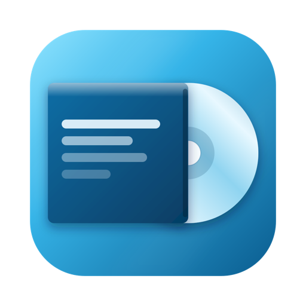
Sleeve is a free, open-source audio tagger for macOS that also converts, rips audio CDs, writes and burns disc images, copies CDs and splits long recordings into tracks. This manual walks through every part of the app and covers what is not obvious from the app itself — installing an app that is not notarized by Apple, and the few tools Sleeve relies on.
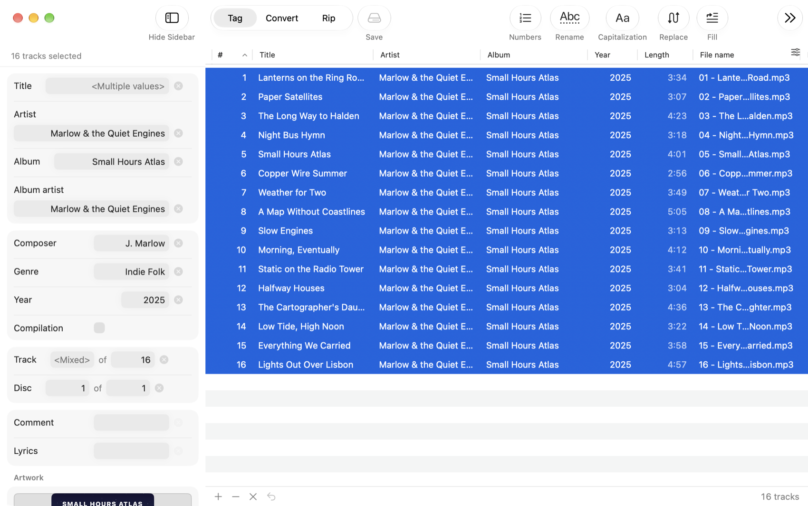
Everything revolves around one track list, shared by the three modes at the top of the window:
Rip a CD, tag what came out, convert it — without importing anything twice. Two things live in the File menu instead: disc images, burning and copying CDs (chapter 7), and the Track Splitter for long recordings (chapter 8).
Sleeve needs macOS 14 Sonoma or later on a Mac with Apple Silicon. Download the latest release from the Releases page of the GitHub repository. There are two ways to install it:
Sleeve is signed locally but not notarized by Apple — notarization requires a paid developer account. The first time you open it, macOS refuses and shows a dialog saying that “Sleeve” Not Opened and that Apple could not verify it.
Sleeve starts, and macOS remembers the decision for this copy of the app. A newly downloaded version needs the same steps once more.
Tagging, and ripping to WAV, need nothing else. Converting, ripping to any other format, FLAC disc images and splitting use ffmpeg, a free command-line tool. Sleeve does not include it — it finds the copy on your Mac, so it stays up to date through your own package manager. The easiest way to get it is Homebrew; in Terminal:
brew install ffmpeg
Sleeve looks in /opt/homebrew/bin, /usr/local/bin and your PATH, or in a location you choose in the Convert sidebar. Where ffmpeg is missing, the affected parts of Sleeve stay visible and explain what to do, with the command ready to copy. Sleeve never runs an installer itself.
Languages and appearance: Sleeve speaks English, German and Spanish and follows your system language. Light and dark mode follow the system as well.
At the top: Hide Sidebar, the switch between Tag, Convert and Rip, and the tools of the current mode. On the left the sidebar — the inspector of the selected tracks in Tag mode, the settings in Convert and Rip. On the right the track list.
Drag files or whole folders into the list — folders are searched completely, including subfolders — or choose File → Add Files… (⌘O). Sleeve reads MP3, AAC/M4A, ALAC, FLAC, Ogg Vorbis, Opus, WAV and AIFF. The buttons at the bottom left add files (+), remove the selected ones from the list (−), clear the list (×) and discard unsaved changes (↺). Removing only takes files out of the list; nothing is deleted.
Nothing you change reaches your files until you choose File → Save Tags (⌘S) or click Save in the toolbar. Until then, Edit → Discard Changes (⇧⌘Z) throws away everything not yet written. After saving, Edit → Undo Last Save (⌘Z) restores the files as they were before.
A field is only written if you touched it. Select twelve tracks, change the album, and every other field of those files stays exactly as it was — even one that looks empty in the inspector because the tracks disagree. An empty-looking field is never written as empty by accident.
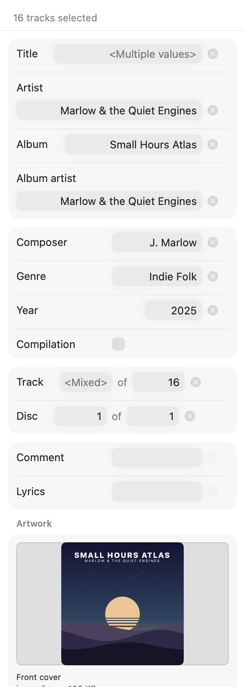
The sidebar shows the tags of the selected tracks: title, artist, album, album artist, composer, genre, year, compilation, track and disc number with their totals, comment, lyrics and the artwork.
With several tracks selected, a field shows the shared value when all tracks agree. Where they differ it stays empty with the placeholder <Multiple values> (<Mixed> in the narrow number fields). Type into it and that value goes to all selected tracks; leave it alone and every track keeps its own.
The small × next to a field clears it on purpose. A dot next to a field marks it as changed.
With nothing selected, the batch tools in the toolbar work on all tracks in the list.
The artwork well at the bottom of the inspector shows every embedded picture; with several pictures, arrows switch between them. Drop an image on it or click it to choose a file. A dialog then shows a preview, lets you pick the picture type (front cover, back cover, booklet page, disc …), scale the image down and choose format and quality — with the actual resulting file size. A picture that needs no change goes into the file byte for byte. Adding a picture replaces one of the same type and keeps the others, so a booklet page does not push out the front cover. The picture is applied to all selected tracks. The buttons below the picture remove it — from all selected tracks — or export it to a file.
Every tool in the toolbar opens a small panel and shows what will happen before anything happens. All of them work on the selection, or on all tracks when nothing is selected, and like any edit they only change the list until you save.
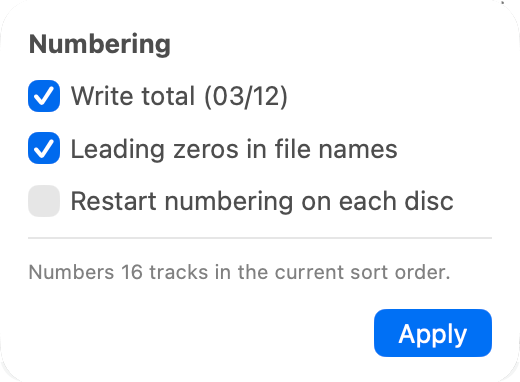
Numbers the tracks in the current sort order of the list — sort by file name or drag the order right first. Write total stores “3 of 12” instead of just “3”; Leading zeros in file names affects renaming (01 instead of 1); Restart numbering on each disc counts each disc of a multi-disc album from 1.
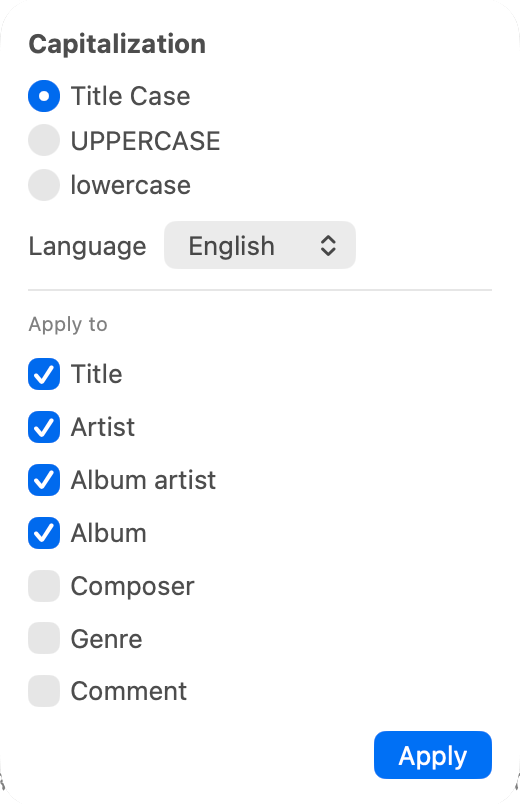
Title Case, UPPERCASE or lowercase for the fields you tick. Title Case knows the small words of the chosen language — “of”, “the”, “and” in English, “und”, “der” in German — and leaves them lowercase inside a title.
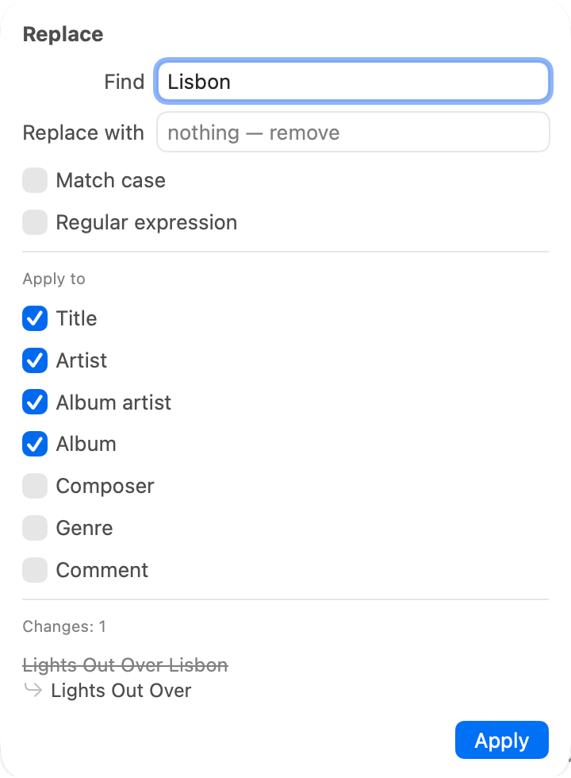
Finds text in the chosen fields and replaces it — “feat.” with “ft.”, or removes “(Remastered 2011)” everywhere at once. Leave Replace with empty to remove what was found; spaces left behind are tidied up. Match case distinguishes upper and lower case.
With Regular expression the search is a pattern, and $1 in the replacement inserts what the first group in parentheses matched. The preview lists every change with the old value struck through.
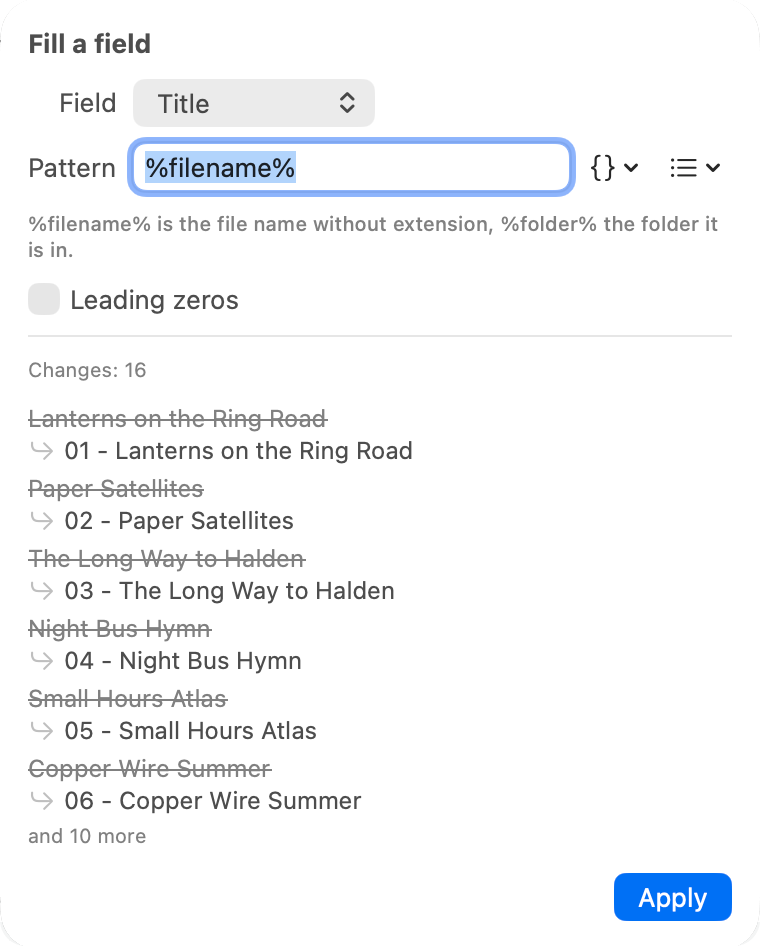
Fills one field from a pattern: Album artist from %artist%, a title like %track% %title%, or the title from the file name with %filename% (the name without extension). %folder% is the name of the folder the file is in.
If a value in the pattern is missing, the text before it is dropped too — %artist% - %title% without an artist gives just the title. A track where the pattern gives nothing at all is left out, not cleared.
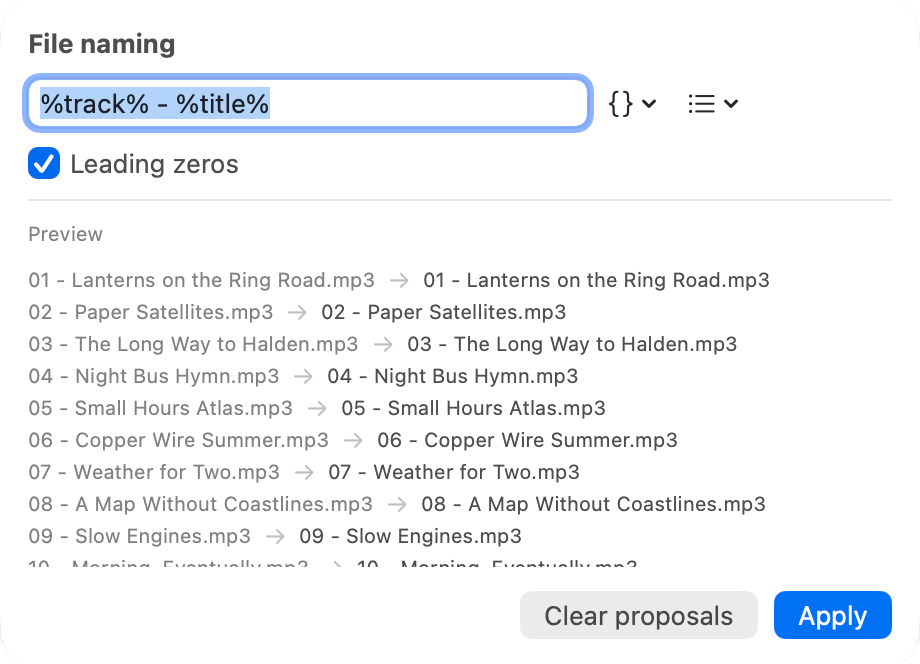
Builds file names from tags with a pattern such as %track% - %artist% - %title%. The { } menu inserts placeholders, the list menu offers ready-made patterns. The preview shows old and new name for every track. Characters that are not allowed in file names are replaced, two files that would get the same name get “ (2)”.
Apply proposes the new names — they show in blue in the list — and they are written together with the tags when you save. Clear proposals takes them back.
| Placeholder | Tag | Placeholder | Tag |
|---|---|---|---|
%title% | Title | %track% | Track number |
%artist% | Artist | %disc% | Disc number |
%albumartist% | Album artist | %year% | Year |
%album% | Album | %genre% | Genre |
%composer% | Composer | %% | a percent sign |
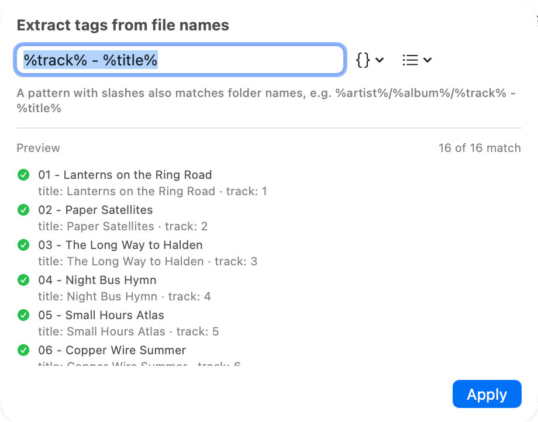
The same pattern read backwards: %track% - %title% takes “03 - Night Bus Hymn.mp3” apart into track 3 and the title. A pattern with slashes also reads folder names, for example %artist%/%album%/%track% - %title%. The preview marks which files match and which values would be taken.
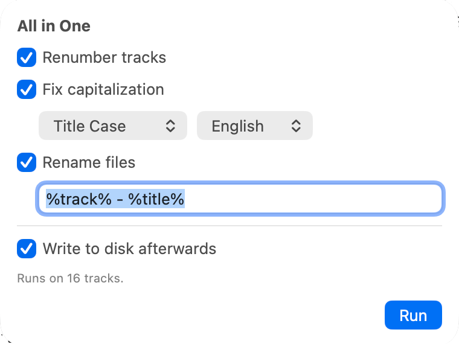
The usual clean-up of a freshly imported album in one go: renumber, fix the capitalization, rename the files — and, if you tick Write to disk afterwards, save right away.
Look Up in the toolbar searches the selected tracks' album on MusicBrainz — no account needed — or on Discogs, with your own token (chapter 9). The search is filled in from the tags; pick a result on the left and its tracks appear next to yours, with each file's length against the release's. A track more than 3 seconds off is marked — so a wrong pressing or edition shows even when the titles agree.
Below the comparison you tick what to take over: titles, artists, album, year, genre, track and disc numbers, and the front cover in the size you choose. Applying changes only the list; nothing is written until you save.
File → Add to Music hands the selected tracks to the Music app. The first time, macOS asks whether Sleeve may control Music.
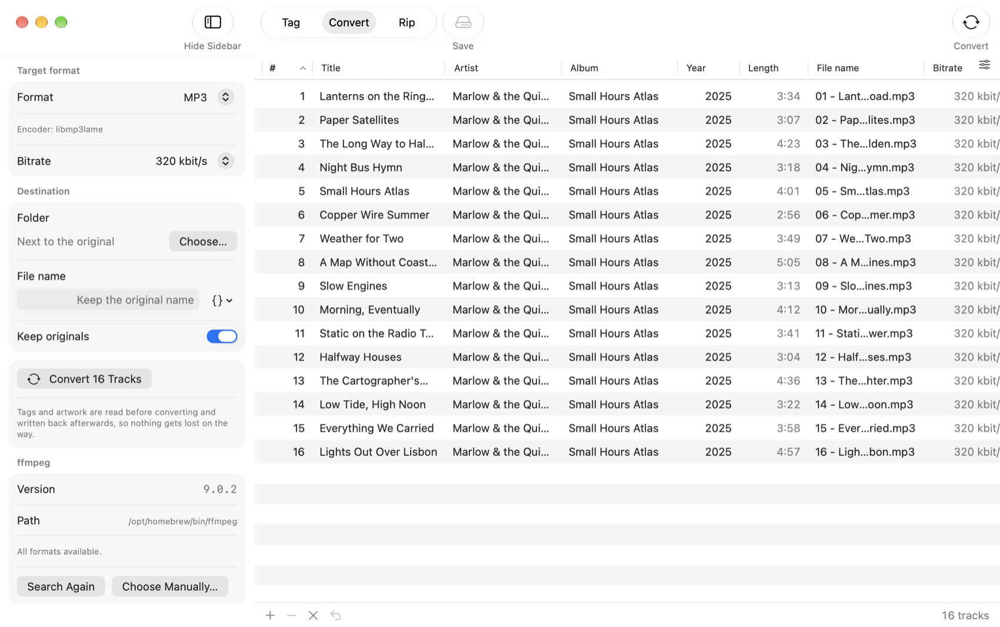
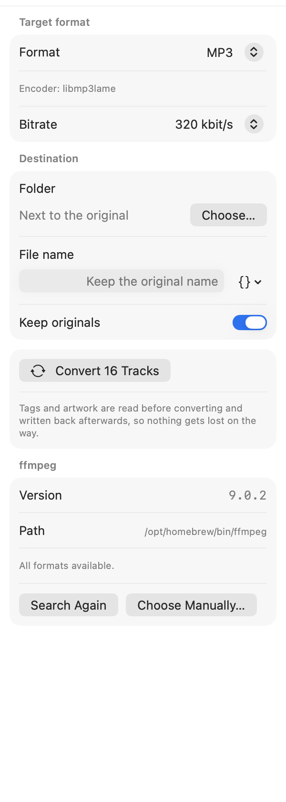
Target format — MP3, AAC, ALAC, FLAC, Opus, Vorbis, WAV or AIFF, with bitrate or compression level where the format has one. Below the format, Sleeve names the encoder your ffmpeg uses for it.
Destination — next to the original or in a folder you choose. File name takes a pattern with the same placeholders as renaming; empty keeps the original name. Keep originals leaves the source files where they are; switched off, a source file is deleted once its converted copy is written.
ffmpeg — which version Sleeve found and where. Search Again looks once more, Choose Manually… points Sleeve at a copy of your own. Sleeve checks which encoders your ffmpeg actually has and says so before a batch starts.
Tags survive. Generic converters tend to lose the album artist, the disc number or the cover on the way. Sleeve reads the tags first, keeps ffmpeg's own tag copying switched off, and writes all tags back itself afterwards — cover included, unchanged.
Insert an audio CD and switch to Rip. Sleeve reads the disc directly — no helper tool, no administrator password — and fills in what it can find on the disc itself: CD-TEXT, the barcode (MCN) and the ISRC of every track.
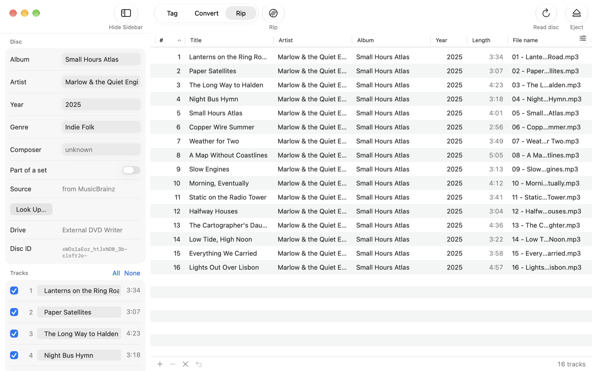
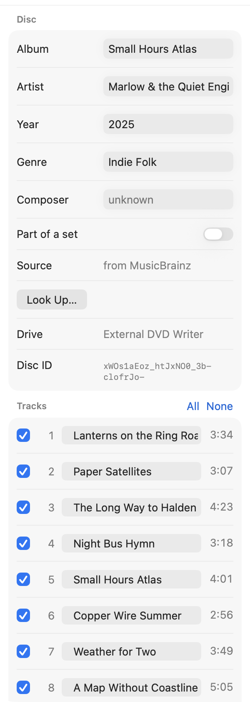
Album, artist, year, genre and composer go into every ripped file — edit them as you like. Part of a set adds “disc 2 of 3” for multi-disc albums. Source tells you where the details came from: CD-TEXT, MusicBrainz or Discogs.
Look Up… searches the disc. On MusicBrainz the disc ID computed from the table of contents finds exactly this pressing; if there is none, Sleeve looks for releases with similar track lengths, and otherwise searches by name. The CD's own lengths stand next to the release's, so a wrong pressing shows before anything is taken over. On a box set Sleeve picks the disc that is in the drive by its lengths. CD-TEXT takes the details from the disc again.
Below, under Tracks, tick which tracks to rip; titles can be edited right there.
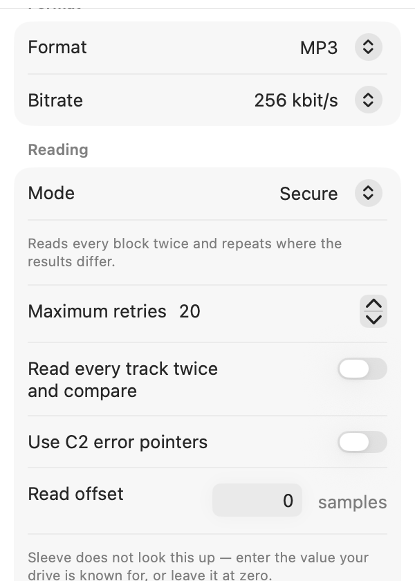
Format — any format of the Convert mode; WAV works without ffmpeg.
Mode — Burst reads in one pass without verification, for clean discs. Secure reads every block twice and repeats where the results differ, up to the maximum retries; whatever stays unresolved is named in the log.
Read every track twice and compare adds a second pass that compares checksums. C2 error pointers let the drive report uncertain bytes — only if your drive really delivers them; Sleeve checks and falls back if it does not.
Read offset — every drive model reads a few samples too early or too late. Sleeve does not look the value up: enter the one your drive is known for, or leave it at zero. Speed — reading more slowly often helps a scratched disc more than any retry.
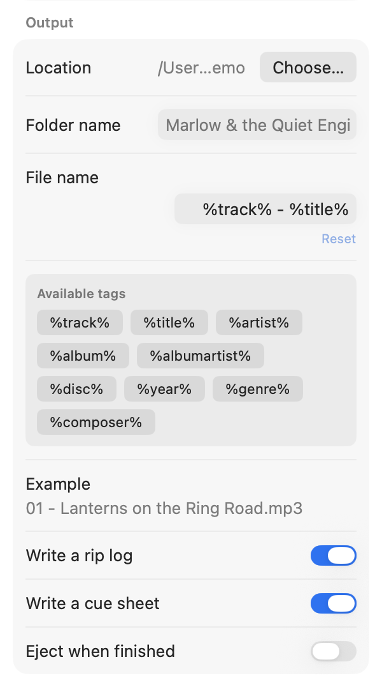
Location — where the album folder is created. Folder name — empty takes the suggestion from artist and album. File name — a pattern from the tags below it; Example shows the result.
Write a rip log saves a log next to the files: drive, settings and, per track, whether it read cleanly and its checksum. Write a cue sheet records the track boundaries next to the separate files. Eject when finished opens the tray after a rip without errors.
Click Rip in the toolbar. Progress shows at the bottom of the window; the ripped files land in the track list, ready to be tagged or converted.
Good to know: Sleeve reads standard audio CDs only. Copy-protected discs, discs with a data track and DVDs are refused, not worked around. Sleeve checks whether a disc reads the same way twice in your drive — it does not compare your rip with other people's rips of the same pressing.
Three functions in the File menu work on the whole disc rather than on tracks. They use the same read settings as the Rip mode.
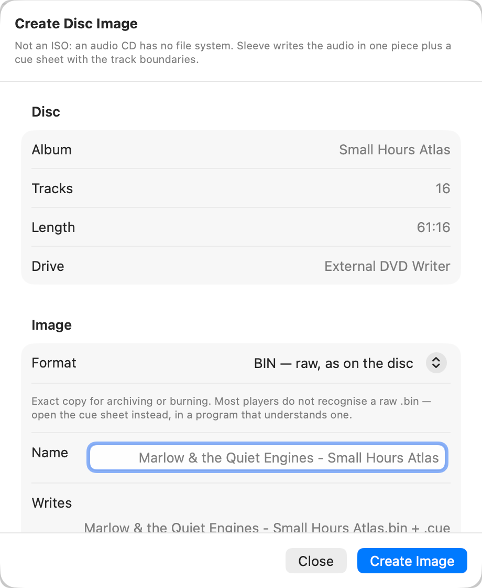
Writes the whole disc as one continuous audio file plus a cue sheet with the track boundaries — gapless, nothing between the tracks is lost. Not an ISO: an audio CD has no file system.
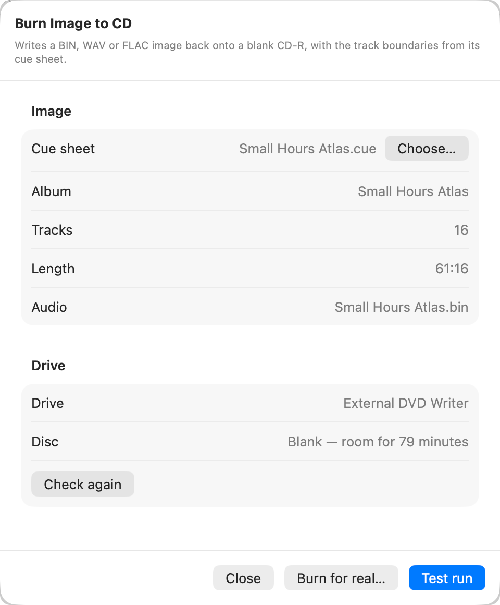
Choose the cue sheet of a BIN, WAV or FLAC image and insert a blank CD-R or CD-RW. Sleeve shows what is on the image and whether the blank is suitable and large enough.
Start with Test run: the drive goes through the whole burn with the laser switched off, and the blank stays empty and reusable. Burn for real… asks once more before it writes — it is the only function in Sleeve that uses something up for good. The disc is written session-at-once, so the transitions between tracks stay gapless.
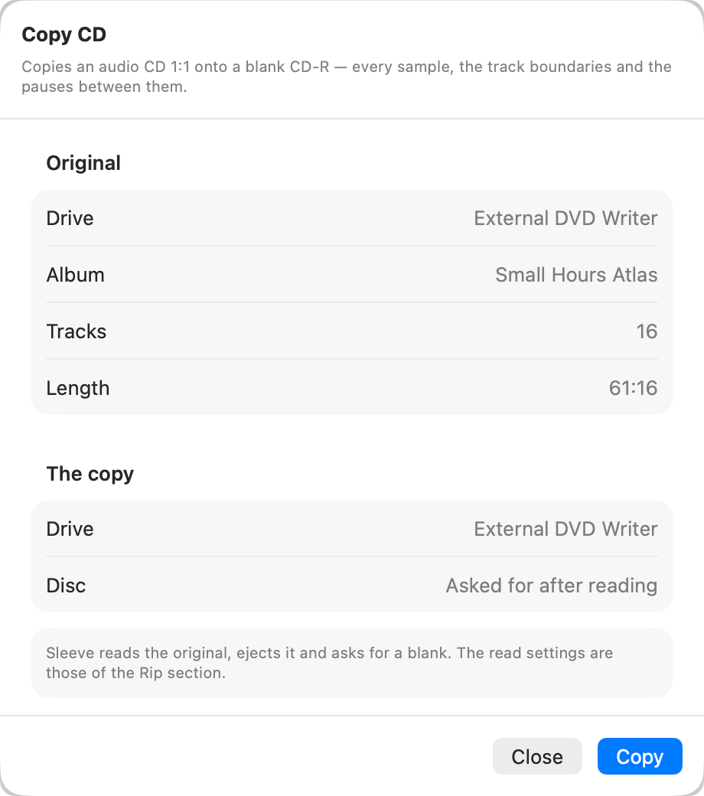
A 1:1 copy with one button. Insert the original and click Copy. Sleeve reads it into a temporary image, ejects it and asks for a blank; as soon as the blank is recognized, it burns. While waiting, it says what is wrong with the disc that is in there — the original put back in, a DVD, a blank that is too small.
With two drives, Sleeve reads in one and burns in the other, without a pause. Copy Again burns another copy from what was read; the original is not needed again. The temporary image is removed when you close the window.
CD-TEXT titles are not copied — the copy carries the audio and the track boundaries.
Several drives: with more than one optical drive connected, the Rip mode and the three windows show a Drive menu for the drive to read from and the one to burn with. With one drive there is nothing to choose.
File → Split Into Tracks… opens a window of its own for one long recording — an album video, a vinyl side, a live set — and cuts it into tracks without re-encoding. Video files work too; only the audio is taken.
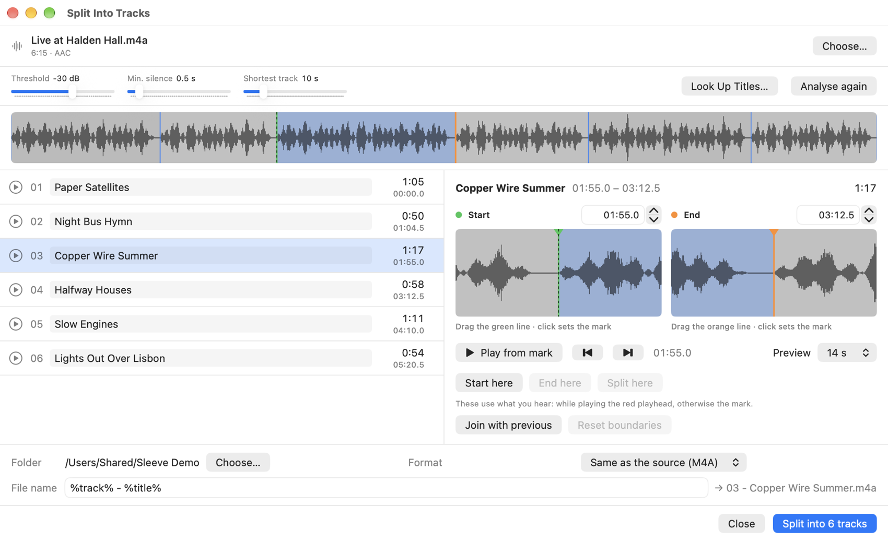
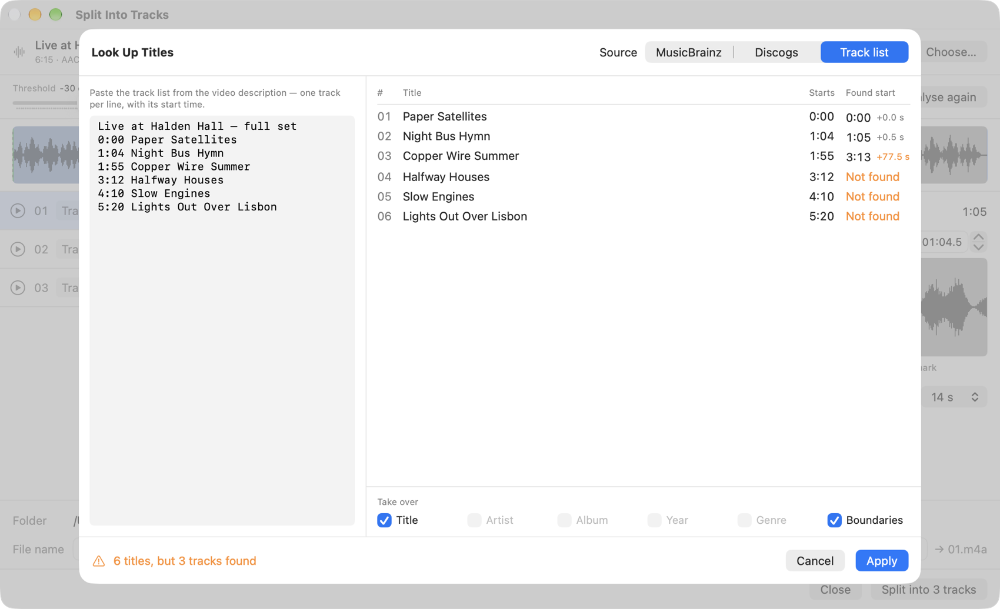
Titles come from MusicBrainz, from Discogs, or from a track list pasted straight out of a video description — one track per line with its start time, in whatever form the uploader wrote it. The list sits next to the tracks Sleeve found, with the difference per track; tracks the analysis missed are marked. Tick what to take over. With Boundaries ticked, the list also sets the boundaries — which finds transitions without any pause at all.
Sleeve → Settings… (⌘,) holds what applies to the whole app; everything else sits in the sidebar of the mode it belongs to and is remembered there.
MusicBrainz works without an account. Discogs only allows searching with a personal access token:
The token is stored in your keychain, nowhere else. Remove deletes it again. Genre from chooses what goes into the genre tag from Discogs: its specific style (“Melodic Death Metal”), its broad genre (“Rock”), or both.
| Situation | What to do |
|---|---|
| Convert or Split say ffmpeg is missing | Install it with brew install ffmpeg, then click Search Again in the Convert sidebar — or Choose Manually… if it lives somewhere else. |
| An encoder is missing | Some ffmpeg builds lack an encoder (often Opus or AAC). Sleeve says which one before converting; a full Homebrew ffmpeg has them all. |
| Discogs finds nothing | Searching Discogs needs a token (chapter 9). MusicBrainz needs none. |
| MusicBrainz is slow | MusicBrainz allows one request per second; Sleeve waits and retries on its own. |
| A rip reports read errors | Clean the disc, rip in Secure mode, lower the Speed. The log names the tracks that did not read cleanly. |
| A disc is refused | Copy-protected discs, discs with a data track and DVDs are not read by design. |
| Saving a file failed | The track shows a warning triangle; a summary lists the reason. Other files are saved anyway — one broken file does not stop the batch. |
| macOS refuses to open Sleeve | See First launch in chapter 2. |
Not supported yet: comparing rips with other people's rips (AccurateRip), pause markers (INDEX 00) in cue sheets, writing CD-TEXT when burning, and opening disc images.
Quit Sleeve and move Sleeve.app from your Applications folder to the Trash. To also remove its saved settings, run this in Terminal:
defaults delete de.neonrost.Sleeve
If you stored a Discogs token, remove it first with Remove in Sleeve's Settings — or later in the Keychain Access app, where it is listed under de.neonrost.Sleeve.